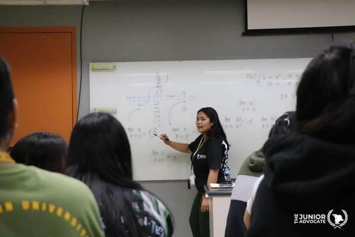

STEM SOCIETY
The FEU HS STEM Society (STEM Soc) is a strand-based academic organization in FEU High School. This firmly enhances the students' skills, excellence, competence, and character. It also serves as a training ground for learners who aspire to be innovators, scientists, engineers, architects, and other specializations who can lead and be good contributors in the field of science, technology, engineering, and mathematics. This organization aims to bring every STEM student through the door to a bright future.